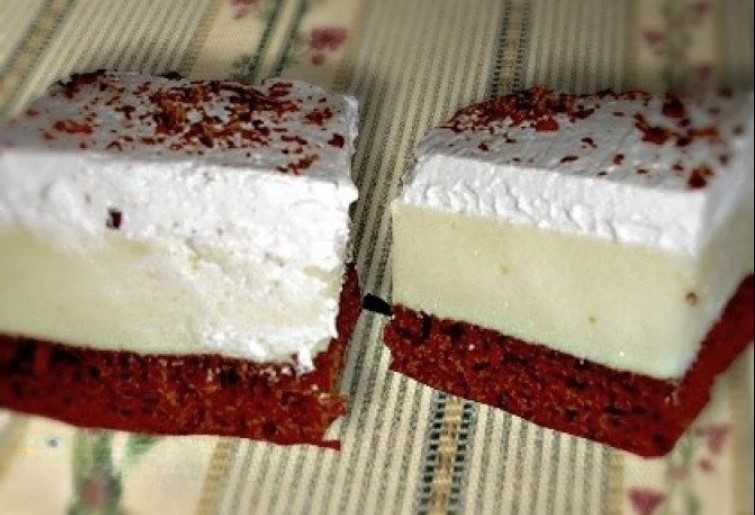

Ajánlott receptjeink
Amerikai krémes

Hozzávalók:
A tésztához:
- 7 db tojássárgája
- 200g cukor
- 200g finomliszt
- 1 csomag sütőpor
- 2 evőkanál cukrozatlan kakaópor
- 13 evőkanál víz
A krémhez:
- 7 db tojásfehérje
- 9 evőkanál cukor
- 2 csomag vaníliás pudingpor
- 6 dl víz
A díszítéshez:
- 4 dl habtejszín
- 50g reszelt csokoládé
Elkészítés:
- A tojás sárgáját kikeverjük a cukorral, a vízzel, majd hozzádolgozzuk a sütőporos lisztet és a kakaót.
- Közepes lángon (kb. 180 fok) kb. 20 percig süjüki. (A tepsi mérete: 27 x 37 cm.)
- A tojás fehérjét a cukorral kemény habbá verjük.
- A pudingport a vízzel simára keverjük és felfőzzük. Még forrón összekeverjük a habbal és a tészta tetejére kenjük.
- További 10-15 percig szintén közepes hőmérsékletű sütőben sütjük. Majd hagyjuk teljesen kihűlni.
- A tejszínt kemény habbá verjük, és a teljesen kihűlt tészta tetejére kenjük. Reszelt csokoládéval jól megszórjuk.